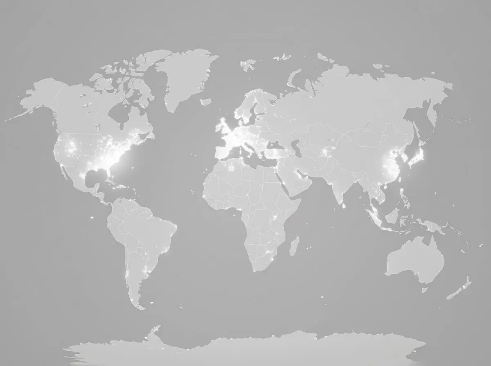

集团能力 // 战略概览
让每一次 风险感知 更精准。
北斗高精度生态
构建面向变形监测的高精度定位与连续感知基础设施。
数字孪生融合
通过智能仿真与业务数据融合，为工程安全创造多维价值。
上海米度测控科技有限公司（MEDO）是深圳北斗星通旗下，专注于高精度定位与物联网自动化监测的综合服务提供商，长期深耕北斗高精度定位与变形监测领域。
公司面向水利工程、国土/地质灾害、矿山安全、城市基础设施四大行业，提供“硬件 + 软件 + 物联网 + 实施运维 + 集成咨询”的五位一体解决方案。我们持续推动北斗物联网监测与数字孪生仿真技术的深度应用，以数据与业务双引擎帮助客户提升安全管理效率，推动行业数字化与智能化发展。
发展愿景
成为关键基础设施物联网监测与数字孪生智能领域的领先服务商。
项目沉淀
累计部署超过 100,000 台套监测设备，服务多类重大工程安全监测与风险预警场景。
十余年专注一件事
企业发展历程
2012
成立
公司在上海成立，开始探索基于北斗高精度定位的变形监测解决方案。
2015
拓展
进入水利与地质灾害监测市场，服务西南地区多类工程安全场景。
2019
融合
形成硬件、软件、物联网、实施运维与集成咨询相结合的五位一体方案能力。
2022
规模化
在水库、矿山等国家级重点工程中规模化部署监测设备与平台系统。
2024
创新
持续升级智能监测平台能力，强化多源数据融合、预测分析与运维闭环。
2025
国际化
推进海外市场布局，面向东南亚、中东等区域输出工程监测能力。
市场覆盖与项目案例
在复杂工程环境中持续稳定运行。
从西南山区的地质灾害与矿山边坡，到城市基础设施与水利工程现场，米度测控的监测系统持续服务于高风险、强约束、长周期的工程安全场景。
- 01上海总部与研发中心
- 02贵州西南区域项目
- 03刚果（金）海外矿山项目
- 04四川水利水电项目

5000+
在线节点
多项目并行运维中
上海总部
建筑结构健康监测
查看案例 →
贵州
地质灾害监测
查看案例 →
刚果（金）
矿山安全监测
查看案例 →
四川
水电站库区监测
查看案例 →
马尼拉
持续拓展中...
在线咨询
联系方式
地址
上海米度测控科技有限公司
中国上海市浦东新区郭守敬路 498 号
中国上海市浦东新区郭守敬路 498 号
邮箱
medo@shmedo.cn
电话
+86 021-33923627